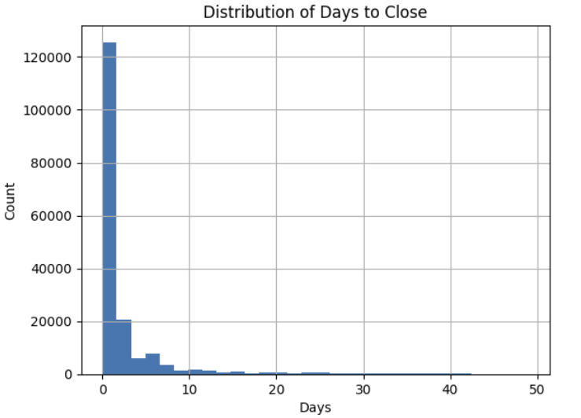

AWS NYC 311 Data Pipeline & Analysis
Built a cloud-based data pipeline using AWS to analyze NYC 311 complaint data. Focused on cleaning data, storing it in S3, and analyzing resolution time patterns.
AWS
S3
Python
Pandas
More details
Problem
NYC 311 receives many complaints daily and it is hard to understand resolution times and delays.
Approach
Used AWS S3 for storage and Python for cleaning and analyzing large datasets.
Results
Found clear differences in resolution time across agencies and complaint types.